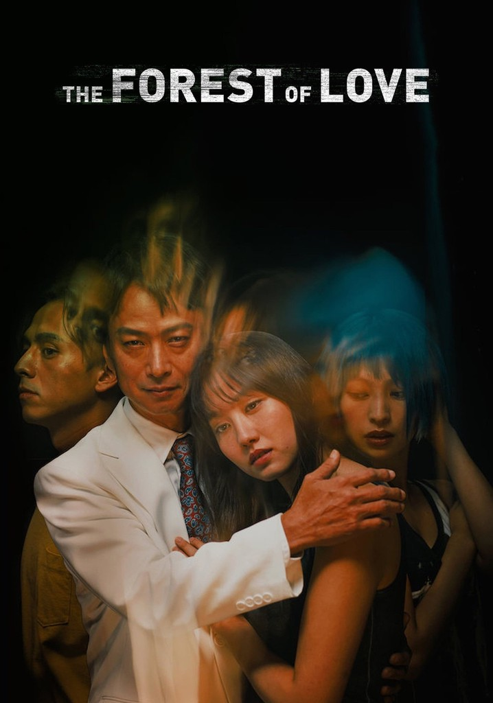

RUTA 1:
«Aquel hombre que se cuestiona la posible existencia
de Dios en el momento exacto de su muerte...
¡Suele morir!»
Sam Shimata-
Axiomas Nihilistas I
✦
Arco I: [Día 1-6]
¿Mis compañeros me observaban pero a la vez no?
“¿Qué pasó?”
“No sé.”
“¿Como que no sabes?”
Levanté los hombros.
“¿Acaso no te conoces a ti mismo?”
Si… Esa fue la conversación que tuve con un vagabundo. Era —yo creo— de algún país de Medio Oriente. De esas personas que no quisieras toparte en la vida, pero que te los encuentras.
Lo único más que supe de ese hombre, es que días posteriores a nuestro encuentro cometió un asesinato en masa; murieron 82 personas —incluyendo a él.
DÍA 1
Desde las 7:30 de la mañana que estoy despierto, y sin embargo sigo sin encontrarme a mí mismo.
Afortunadamente hoy, 30 de Mayo de 2118 es sábado, por lo que puedo darme el lujo de pasarme en mi ataúd por horas.
Las conversaciones vagas de mis vecinos, junto al ajetreado pasar de los coches se dejaban notar a primeras horas de la mañana, como si compitieran por quién me provoca primero.
Mi habitación, espaciosa pero sin alma alguna, parece más un cementerio que otra cosa.
Que puto asco, dios mio. Me quejo al poco de despertarme.
Ropas de todo tipo, ya sea sucia o limpia esparcidas por el suelo en demasía. El porque dan asco, es por el «crack» que ruge de sus cuerpos al pisarlos, los cuales son similares al ruido que producen las fieras o las sierpes al serles despojado de alguna extremidad.
Al fondo de la habitación, sobre una silla divisé algo que hizo que me cagara encima; poseía dientes afilados como una fiera, sus músculos super tensos, como si cargara un ataque.
—¡Quién anda ahí! (Que coño quieres de mí, vallese, tome mis pertenencias. No me hieras. Un «zas» de la nada y se acabó para tí, eh).
Al mismo tiempo, los primeros rayos de sol, ya te decían buenos días pero no del todo, bueno… yo ya estaba despierto desde hace rato por el charcal que se dibujaba en mis sábanas (¡Putos 37 grados a las siete de la mañana!)
No obstante me acostumbré a vivir entre tanta carroña, en un escenario ambientado en las novelas de Anne Rice (Descripción dada por Exypra, mi mejor amiga).
Oh, qué haría yo sin mi querida Exy.
Bueno… antes de apresurarme en la narración de los eventos, proseguiré con el presente: «La guerra entre Ucrania y Rusia continúa…»; «Última noticia, 82 personas perdieron la vida ayer en Ronda, Lleida. Los Mossos D’Esquadra confían en que se trata de un crimen de odio…»
—Joder… —me quejé—. ¿Por qué tiene que pasar esto? Parecía buen tipo (Si ignoramos, claro está, sus convicciones políticas, y más que pasar desapercibido, uno si lo observaba más de cerca se daría cuenta de su verdadera naturaleza).
Aparte de eso, nada interesante pasó por la mañana.
Ya llegadas las diez, me encontraba en mi balcón, entusiasmado en una parte por la pronta llegada de Exypra; la cual se encontraba en el pórtico, y por otra parte repugnado por la cantidad de gentes que hoy en día pisan estos barrios, siempre que los observo, ya sea desde el balcón o desde la ventana de mi cuarto, no puedo parar de preguntarme si acaso poseen emociones o problemas. Quiero que sean humanos, no unos fascistas de mierda.
Con razón…
¿Acaso encontrarse a uno mismo es a partir de la ideología?
«Eres muy joven para esos temas políticos, Kamada» solía decir mi abuelo. Bueno… creo que Adolf Hitler dijo algo similar en su famoso libro, ¿no?
¿Por qué hizo eso? ¿Es necesario matar a los demás con tal de encontrarse a sí mismo?
La ideología es un escape de la realidad… se podría argumentar que todo es un escape de la realidad.
—Cada día este piso está más sucio —Sonrió a la vez que se quitaba la chaqueta— ¿Qué tal estás? ¿Bien? Supongo que un poco triste por lo de ayer… ¿Fue ayer?
Deberías comprarte un asistente Humana para que te ayude con la limpieza… Créeme, te será útil.
—Tomó una bocanada de aire.
No pude contener la risa; amaba estar ante su presencia, su forma de hablar…
—¿Por qué te ríes?
—Por nada.
—¿Seguro?
Su presencia siempre me hacía reflexionar: ¿Qué es lo que tanta curiosidad le causa de este vertedero inhabitable?
“El que se junta con mierda después se mancha.”
—¿Y qué tal con tu novio? —pregunté como pa’ cambiar de tema.
—Ah… ¿Fabi? ¿Ese fill de puta…? —Jugaba con sus dedos nerviosamente.
—¿Hijo de qué?
—Si… creo que se encuentra de vacaciones en una villa alquilada junto a sus padres y su hermana pequeña.
—Ni me enteré que Fabi tenía hermana.
—Ni te enteras de na’ tú, eh. Como vas a enterarte, si no sales de casa.
Típica pareja de instituto que a primeras parece que no van a durar ni dos días, pero que finalmente la relación se alarga más que un chicle.
«Lo siento Exy —decía Fabián—, pero ya sabes… La mala vibra que hay entre mi madre y tú —se echó los pelos para atrás mientras se le acercaba—. Quizás es mejor que te quedes en Lleida…»
Cuál si un balde de agua con hielo le hubiera caído encima, ella se encontraba hablando de cualquier barbaridad sin sentido —según mi juicio claro está—, pero siempre referente a Fabián: que si supuestamente le era infiel, que si nunca quedaban juntos, que si le trataba mal, que si sus padres son muy estrictos, etc.
«Quizá ya se encontró a otra novia» —comencé.
«Que…»
«No estoy metido en vuestra relación —tosí—, pero la manera en la que te trata últimamente no me deja otra».
De repente, su cara cambió a: ¿decepción? ¿Realización?
Añadí un: «no sé, igual…»
«Ah —gruñó echándose las manos en el rostro—. Tal vez tengas razón.
Un deje de emociones las cuales no podría describir, se dejaban ver en su rostro—, tan solo soy una más —se limitó a decir». «No digas eso».
—Cállate.
—Porque.
«No sabes cuanto odio que me traten como víctima —Se levantó bruscamente—. Vine a este vertedero humano para ver cómo te encontrabas, para que al final saques lo de mi novio. Vaya hijo de puta, eh.»
Mierda.
Tras eso, un silencio incómodo comenzó, el cual a mi parecer duró un lustro y medio. «Si, ya puedes ir meditando, ya.»
DÍA 2
Como siempre, días monótonos en su mayoría, y para el colmo mi mejor amiga me odia.
¿Desde cuándo mi vida se ha vuelto tan mierda?
¿Qué estamos haciendo mal?
No sé exactamente el momento ni la fecha exacta en que comenzó mi decadencia.
¿A qué día estamos?
31/5/2118
¿Porque nunca me acuerdo de nada?
—A ver —dije tratando de reorganizar mis recuerdos.
13-01-2108: Juan de Amarante, y las JONS toman el poder a la fuerza…
17-01-2114: Se aprueba el decreto-ley Anti-Comunistas.
23-08-2110/: Desata la Segunda Guerra Civil Española. El Frente Armado Franquista, también conocido como NGF, anuncia un golpe de estado en contra del Partido Socialista Español…
«¿En que se está convirtiendo España?» decía mi abuelo.
Con bastón en mano, gritaba a más no poder, como si sus gritos ayudaran al país.
«Me va a dar un ataque de tanto ver a fachas en la calle».
¿Qué cojones? De repente, una sensación meliflua cual tela, pero omnipresente, se dejó ver; no pude más que llorar.
Dos meses… No, 2 semanas antes, el conflicto entre la Neo-Germania de Bertram Heydrich y Japón había “finalizado”.
¿Cómo cojones me acuerdo de eso?
DÍA 3
Passeig de Ronda registraba en sí, un lugar repleto de culturas diferentes; de lo exótico si te interesan comercios extranjeros, hasta productos locales que emergen satisfactoriamente por la alta demanda.
Las enormes casas, que eran independientes las unas de las otras, se combinaban con chalets diseñados de la más sofisticada arquitectura, poseían superficies curvadas de colores blancos en su mayoría; más abajo, chavales de entre todas las edades, yacían semi desnudos en las sucias callejuelas del Passeig de Ronda.
Pedían limosna, mas inútiles eran los intentos de sobrevivir, ya que los ciudadanos que pasaban por ahí, empezaban con un: «No tengo, lo siento»; o peor aún, los ignoraban.
PROGRAMA-EUGENÉSICO-NGF
Se podían observar mensajes del estilo en los enormes carteles de la NGF.ASAMBLEA 19-N NGF
El careto de Juan de Amarante resaltaba sobre todo. Vaya estupidez. Pensaba Exypra, la cual alzó el vuelo desde Balafia a pie, y contemplaba de reojo a los vagabundos. No era la única, para nada, como ella había cientos, no, miles de jóvenes que se oponían al régimen franquista, más ella sí era pícara; ya que no era de esos que manifestaba a pecho descubierto para luego ser ejecutados públicamente. Delante suya un semáforo en rojo: los pitidos de los que buscan jaleo en las carreteras, más al fondo, sobre una pila de árboles se vislumbraba su destino: visitar a la alemana. —Toc toc —decía Exypra —soy yo, abre. —¿Quién? —Exy. —¿Quién? —Exy… Maldita imbécil —Seguía sin abrir Anna Foyer. —¿Por qué debería abrirte la puerta? —No te hagas —Suspiró Exypra. Tras unos minutos de no respuesta: —Vale va… Entra —La inspeccionó de arriba a abajo—. ¿Puedo confiar en ti?(«¡Pues claro que sí!») La otra vez trajiste a ese fascista de mierda… —Fabián se llama. Va déjame entrar. No, no está. Anna, tras dudarlo un instante, la dejó entrar, observando en todo momento su alrededor. —Y bien, ¿Conseguiste lo que te pedí? —Si —Se subió las gafas—. Adelante, toma asiento. —Vaya —dijo Exypra. No me esperaba que el apartamento de esta rechazada social tuviera estas vistas. La primera impresión entrando al salón: ver a Ronda cual cachorro frente a una manada de tigres. La extrañeza de presenciar el lugar en el que pasas ocho horas diarias en tan suma vulnerabilidad la dotó de la tranquilidad que necesitaba. Seguidamente tomó asiento, dio un último vistazo al lugar disimuladamente, para luego añadir: —Bueno… Si no tienes prisa tómate tu tiempo, Anna —suspiró de nuevo—. Estos tiempos están siendo complicados. Mientras tanto, Foyer andaba improvisando el escritorio. —¿Me estás escuchando? —Si… Lo de tu novio, ¿verdad? —Hizo un énfasis en “tu novio”, provocando a Exypra. —No se trata de eso… —¿Entonces qué coño te pasa? —Oh, Dios mío… Kamada. ¿Kamada? Pensó Anna. —No me digas que… —Ambas muchachas rieron— ¿En serio? ¿Kamada? —Volvió a subirse las gafas— ¿Aquel con pintas de vocalista de alguna banda de Black Metal indi? ¡Vamos, un pesimista total está hecho el tío! —No se trata de eso. —Y luego tenemos al facha —añadió Anna, ignorándola—. Que mal gusto tienes para los hombres. —¿Puedes callarte ya? —la interrumpió al borde del enojo. Aunque trataba de mostrarse sería, ella amaba estos pequeños momentos con Anna. Aunque la consideraba una friki, detrás de esas gafas redondas, se podían notar unos rasgos bien marcados que demostraban una belleza natural— No nos tratamos de esa manera. Kamada…, es como mi hermanito. Era Anna Foyer hija de una bien posicionada familia que emigró a Ronda cerca de los ‘10 de Germania. Odiada en parte por sus coetáneos: que si no la consideran una nazi, la tratan de bruja, o si no la ven cual una progre, la tratan de retrasada mental, era una joven de convicciones claras, ni muy directa ni muy tímida. No se sabe nada de sus padres, los cuáles, dos años después de mudarse en territorio rondiano, poco se le vieron junto a su hija mayor. Muchos afirman —con verificación empírica, obviamente—, que los Foyer fueron asesinados por quién parece ser su propia hija. Hasta corre el rumor de que en realidad la muchacha es una espía Dhampir mandada por la NGN con tal de derrocar a Juan y su partido. Imaginense como pegaría esa noticia en los tiempos de hoy: Alemana-rubia asesina a sus padres, con tal de quedarse con la herencia. No conforme con eso, investigaciones recientes afirman que formaba parte de un foro online para gentes de por allá.. (Suéteres sudorosos, en pleno agosto, polos y campirillas en las playas de Barcelona, el oleaje pausado del mar, no te metes al agua por haber tragado más sal que un caballo, camiseta de tirantes de una visibilidad en que se le marcan los pezones, levantas los ojos y la ves, a la Dhampir de Ronda: «Venga, devora mi sangre, nena»). —Era una broma, nena… —se reía Foyer. La otra, la miraba de reojo; desaprobando a medias su supuesto sarcasmo, a veces (en los pocos momentos en los que quedaban) pillar si sus declaraciones eran parte de una broma o no, le resultaba complicado. —Entiendo. Pero dudo que pueda ayudarte, si hay alguien que conoce bien a Kamada, esa eres tú. Pero bueno, cosas que pasan supongo. Exypra, sumida en un mar de inculpaciones, no hizo más que hojear a su alrededor, un acto reflejo de la vida tan ajetreada que vivía. Un cuadro que pendía sobre la pared le llamó la atención, con suma cautela lo estudiaba, como si quisiera extraer su esencia, Anna, notando esa aparente fijación rozó su rodilla con la de ella. —Ese cuadro de ahí… En el que coincidentemente sales con una mujer que se parece a tí —comenzó Exypra—... Parece bastante antigua, ¿cuando os la tomasteis? —Marbella, 2109, poco antes de mudarme a Ronda. —Si, si ¿pero quien es esa que tanto se parece a tí? —Ummm —Exypra no apartaba la mirada del cuadro. —Con la cara que me llevabas, mirate ahora. —A ti que más te da quien o que deje de ser. Desde siempre te dije que no me gusta que te metas en los mío, ay deu meu que pesada que eres, eh. —Ni ayes ni ostias, Foyer, ¿porque tanto oscurantismo hoy en día? ¿Desde cuándo fuí desleal contigo? —se levantó— Ese es el problema con nuestra sociedad: en las Redes Sociales se identifican como como comunistas, liberales, o peor aún, como un Nazi de mierda, para posteriormente no hacer nada. Se dan la molestía de identificarse en uno de estos grupos asquerosos con tal de mejorar el mundo, pero cuando llega el momento —Su forma de hablar causó una pequeña risa en Anna—, ¿qué crees que es lo que hacen? (“Sigue Sigue”) Nada, absolutamente nada. Luchar por el pueblo oprimido de Ronda, España y Europa en general es como nadar a contra marea; o se nace rico o se nace rico, punto. —No entiendo a qué quieres llegar con esto… DÍA 4 —Si. Intento de ataque terrorista es de lo que eres acusada. “Señora Exypra” la apodaban los policías, a pesar de ser menor de edad. —¿”Exy” te llaman tus amigas? ¿Dónde estoy? —Estás en comisaría —dijo uno de los policías—. Ahora responde nuestras preguntas. —Pequeña hija de puta —añadió el otro. —No tengo idea de lo me estáis hablando —lanzaba evasivas ella, en todo momento ni les miraba en la cara. Quería largarse de ahí, mas no podía. —Mirala que estúpida —se reían— Tienes casi 18 años, venga, espabila si no quieres acabar como los del Passeig de Ronda. —Segurísimo que los del Passeig de Ronda que tanto te burlas son más inteligentes que tú, eh. El más rechoncho de los dos, dígase de él que su nombre es Dadá, comenzó: —Dinos de donde vienes, jovenzuela. Mientras más rápido sea el proceso, más beneficiados saldremos. No te haremos daño anda. —De su bolsillo sacó un cigarro (“¿quieres?”) —Un carajo voy a confiar en ti, puto gordo de mierda. No fumes delante mío (“¿O qué?”). No, no fumo. El otro, Masashi, el cual dígase de él que tiene rasgos japoneses, siguió con: —Va, de seguro que eres una guarra… Se hace la reservada. A saber con cuantos te has acostado. Seguro que te acuestas con cualquiera por dinero. ¿Tienes novio? «Aquel hombre que se cuestiona la posible existencia de Dios en el momento exacto de su muerte… ¡Suele morir! Intuía que con frases similares, las mujeres al verlo se enamorarían al instante. —¿Por qué las mujeres son tan estúpidas? —Reflexionaba junto a sus discípulos—. Bien, ese es el tema de hoy…» —Vaya mierda de peli, ¿no? —se quejaba Tanya—. ¿Te fascinan este tipo de pelis? Su inútil búsqueda de alguien a quien amar para siempre, le atormentaba a más no poder. —Concuerdo contigo. Los cigarrillos amontonados sobre el cenicero cual si pipas se tratasen; el ruidoso quejar de los borrachos del bar de abajo, que vivían eufóricamente un partido de fútbol; y unas cuantas copas de más, acentuaron la ocasión para una noche que quedará marcada en los días venideros. Rápidamente la conversación se fue por otros derroteros: —Y bien, ¿Cuáles son tus hobbies? —preguntó Tanya. Éste se levantó de su asiento, casi ignorando la pregunta —¿Cuáles son tus hobbies Shimata? —volvió a preguntar. En su traje blanco se veían tintes de una vida acostumbrada al trabajo duro. Tanya movió la cabeza de lado a lado: —¿Qué no me oyes? —Ah, ¿Qué decías? ¿Mis hobbies favoritos? —Si. —Diría que son escribir y ver películas —hizo una pausa breve—. También me agradan las matemáticas; no obstante las abandoné. —Ya veo… —Las matemáticas, o mejor dicho lo abstracto —Volvió a su silla—, me aíslan. Mejor dame una buena novela romántica. De hecho… —quiso añadir. —Mis hobbies… —... de hecho estoy escribiendo un libro, titulado Axiomas Nihilistas I. —¡Yo también me dedico a escribir! —por fin dijo Tanya. —¿En serio? DÍA 5 Recién me acabo de enterar de la muerte de Anna. No sé cómo reaccionar. ¿Debería llorar? Y para el colmo, Exypra me sigue odiando. Siendo honesto, hace días que no escucho nada de ella, ¿estará bien? «—Hola Exy. —Fabi… —ambos se abrazaron. Parecían milenios, el tiempo que Exypra, presionada por la policía a confesar, estuvo recluida en una celda tres por tres. Lo echaba de menos, extrañaba la seguridad y la calma que los brazos de Fabián le hacían sentir. Este último trajo consigo una bolsa llena de ropa, para acto seguido tirarla al suelo. —Venga, va, vístete de una vez. No ves que pintas me llevas, eh. —Te amo, Fabi —se agarraba a él. —Suéltame… no ves la vergüenza me has hecho pasar —su expresión cambió completamente—, ¿Porque siempre me pones en este tipo de situaciones? Si no fuera por mi, ahora mismo estarías igual de muerta que la estúpida de Anna. Venga va, vístete. —¿Desde cuándo eres así? —de sus grandes ojos oliváceos lágrimas comenzaron a caer— ¿Acaso ya no me quieres? —¿No me amas? Dímelo —repitió. —¿Cómo que no te amo? Maldita imbécil —la abofeteó— ¿No te das cuenta que todo este escándalo puede manchar nuestra reputación? —¿Entonces por qué me haces daño, si tanto me quieres?» Si que tarda el bus, ¿no? Cual si una broma de mal gusto se tratase, yacía esperando, por más de 45 minutos el bus Pardinyes-Mariola?. No era el único, no; detrás mío también habían unos chavales. Poseían caras de funeraria total. Pasaban los coches, y vidas ajenas curiosean de vez en cuando; más nervioso me ponía. «Oye, ¿sabe usted cuándo viene el bus Pardinyes-Mariola??» —pregunté a uno de los chavales. Acto seguido ambos me observaron con cara seria, cruzaron miradas para luego partirse el culo. «Hoy es día festivo», dijo uno. DÍA 6 Me desperté repentinamente de mi sueño. Tengo un mal presentimiento. Pero ¿por qué? No sabía de qué se trataba. Miré a mi alrededor por si lograba capturar algo fuera de lo común, mas solo se escuchaba el dulce cantar de los grillos más algún que otro coche. Observaba la Lleida oscura e insípida que siempre viví. Que nostalgia me entra recordando las memorias con mis abuelos, los cuales siempre decían: «Aquel edificio de ahí, ¿lo ves? Pues antes eso no era más que montaña», o algo parecido. También mi abuelo, el cual presuntamente participó en la Tercera Guerra Celestial, no paraba de contarme historias acerca de sus experiencias en el campo de batalla y en la mili, de cómo en tiempos antaños, sin importar tú género ni tus bienes, era obligatorio ir a guerra. Eso sí, ni un rasguño tenía el pobre. Su nombre era Bertram (no ese «Bertram»). ¿Si es «día festivo», so gilipollas, entonces porque estabais en la parada de bus? Eran las 4 de la mañana, lo que significa que tengo clase en 4 horas. El cansancio se sentía en todas las partes de mi cuerpo, así que me levanté con una fuerza casi externa; no obstante, un dolor agudo en mi cabeza interrumpió mis deseos. ¿Qué cojones me está pasando? No era un dolor pasajero —a priori—, sino todo lo contrario, parecido más a un castigo divino que a otra cosa. El dolor no cesaba. ¿Por qué me tiene que pasar esto? Me lamentaba. Voces familiares, lo urbano en su naturaleza. Difería a lo de instantes atrás. —A Kamada le fue medianamente bien el examen —logré oír a mis espaldas—, ¿No es así? No respondí, o al menos no me era capaz de lograr semejante acto. —¿Estás segura que aprobó el examen? No sé, eh. Con la cara qué me lleva ahora… —El profesor dijo que no suspendió a nadie. Bertram, no seas payaso. ¿Bertram? ¿Dónde coño estoy? —Razón no te falta. Dudo que el “intelectual” de Shimata nos mienta sobre los exámenes, ¿cierto? —me dio un leve codazo. Tras eso, la conversación siguió su transcurso natural; preocupaciones sobre los siguientes exámenes los cuales no suficiente con ser demasiados, la dificultad era del tipo: «Si si, estudié por 6 horas el día anterior al examen y acabé suspendiendo igual»; charlas sobre dónde quedarían esta tarde, inclusive llegué a oír algo sobre ¿Hunter×Hunter? ¿Ese manga no quedó en la historia por que el autor, cuando se disponía a cerrar dignamente su obra, falleció tan de repente? Fue en un breve momento, fugaz pero que queda marcado para siempre, en que la vi. Sentada a varios metros de distancia de nosotros en su usual banco. Más seria de lo común pero con un aura totalmente diferente, sostenía vagamente un cigarro entre los dedos; era Exypra. Y bueno… acompañada de dos más; la de su izquierda, la cuál hablaba con entusiasmo nunca antes visto; y la otra, la cual destacaba sobre las demás por su gran altura, acariciaba a un yorkshire («que mono… Que pasa eh, monada»). ¿Me sigue odiando? Me pregunto si alguna pequeña fracción de mi ser existe dentro de su conciencia… Quizá en ningún momento se le vino a la mente lo de días atrás. Joder… Como si nuestra amistad fuese una virtud imperecedera espiritual, todo ante mí tomó su brillo original. Se me hizo extraño mirarlos al rostro, no sé si por mis errores (qué fue lo más malo que hice? ¿Robar chuches en un chino?), que inconscientemente dieron ese signo; o más bien una manera de evitar sus conversaciones banales. —Puto Kamada —Me volvió a dar otro codazo, esta vez más fuerte. ¿Qué coño se cree el tal Bertram? Sus intenciones lo delataban, me estaba retando. No sé en qué exactamente,... Ni lo conozco al notas este, pero se dejó ver cuando en un zas, envolvió su brazo sobre mi hombro. «¿Quién te conoce? ¿Acaso tienes amigos o familiares? (dije que sí, que sí que tenía, no obstante, su pesado brazo seguía sobre mi hombro) Tienes que ser más abierto con los demás. Hablales, que se noté que eres del Ronda, que sinó pareces gilipollas». —No se que tienes en contra de Kamada, dejalo al pobre. —Me miró a los ojos su amiga— No, no creo. No parece tonto, más bien todo lo contrario, cómo si se calláse los secretos. —Se hace el tonto… —¿A qué te refieres? —respondí. — …no sé, desde que te vimos los primeros días sentado en este banco todo solo a inicios de cursos, no sentimos otra cosa que pena por ti, sin ofender claro —dijo Bertam—. ¿Cómo alguien logra ser feliz consigo mismo con estos grados de soledad? Reflexioné unos segundos sobre lo que me dijo, me daba vergüenza que esa sea la impresión que tienen sobre mi. Como alguien siendo descubierto en pelotas, que instintivamente se cubre, pero en este caso, estos trataban de ahondar sobre mi psique. —Tampoco estás tan solo —añadió Bertram—, te juntas mucho con Exypra y su grupo, aún cuando vuestros estilos de vida no congenian en absoluto. Solté una pequeña carcajada. A eso le siguió la risa de los otros dos, forzada o no, continuaron la conversación, añadiendo: «Estar con Exypra es cómo no estar con nadie en absoluto», «Ya ves…» «Es tan… No sé, es tan falsa y superficial que da pena.» Me encantaba la naturalidad con la que conversaban entre ellos: sin tapujos ni pelos en la lengua; les importaba una mierda que estuviera ahí, o al menos ignoraron eso. —Perdón si te molestó un poco eso. ¿El que? ¿El que os metáis con ella delante mio? Hijos de Puta. Negué con la cabeza, finalizando con un: —Tampoco estoy tan metido en lo que hace… a decir verdad nunca lo he estado, aunque nos llevamos conociendo desde crios… a saber lo que le pasa. Al mismo tiempo, los pequeños rastros de vida se dejaban ver por los alrededores del Ronda, a punto de empezar la quinta hora. —Igual tiene problemas con Fabi… —dije. —Pues bueno, cosas que pasan supongo… Me olvidé de presentarme, mi nombre es Evangelia («puedes llamarla Eva, es mucho más fácil» dijo Bertram). Ya pasadas las dos y media de la tarde, con el sol todavía en lo más alto y las clases finalizadas, me encuentro por fin en casa. Aclaro que tuve que tragarme no sé cuanto tiempo esperando el bus; sabiendo de ese dato, me hubiera tardado menos caminando pero bueno. Aclaro también que para acceder sobre el complejo de apartamento en donde vivo, uno tiene que primero subir una subiteda —Valga la redundancia—, para luego recorrer un pasillo de unos cincuenta metros, pero para el colmo, en esta ocasión, debido al aumento de las manifestaciones estudiantiles, se bloqueó la carretera y parte de la calle. Aunque dime tú que es lo que cambian con pararse frente a los coches mientras muestran sus senos. Inclusive algunos de ellos me ofrecieron unirme; una de esas propuestas fue similar a: «Eres un joven cómo nosotros, ¿cierto? Únete a nuestra causa, pequeño hombre…» —a pesar de que éramos de la misma edad. Ese joven, de ojos un poco asimétricos pero profundos, portaba un largo bigote recientemente tallado junto con patillas, dándole un aspecto de policía de los años sesenta que otra cosa; su tez no era blanca pero tampoco negra, casi como mi mejor amiga; de estatura más de lo mismo, solo que este era un enano, sus brazos eran fornidos, se notaba que levantaba pesas (o era la impresión que sus cortas extremidades daban); movía los brazos de arriba a abajo, de lado a lado. Pretendía ser un experto en retórica, más todo lo contrario, reflejaba una inmadurez que poseen ciertas personas que tratan de imponer autoridad sobre el resto, siendo aún ellos de la misma clase. ¿Pequeño hombre? Que chaval… Otra cosa que me olvidé mencionar es que por alguna razón su rostro me sonaba. Quizás se acercó a mí porque vamos al mismo instituto. Quien sabe. Ronda es demasiado grande; cuando se observa de lejos opaca al resto de los edificios, cual un deseo auto implantando que reflejase la cantidad de barbaridades que cada día ocurren, no solo en sus interiores sino también por sus alrededores. Bueno, quizá estoy exagerando. Si piensas eso, que te den. Pregúntale a Fabi o a Exy, esos de seguro son más despiertos que yo. Lo que admiro de ese chaval es que al menos vive la ideología, ¿no? Acto seguido llegué a mi piso. Me cambié de ropa y elegí la más elegante que pude encontrar: unos jeans azules semi ajustados junto a una camisa azul claro, ¿que marca son? Ni puta idea, lo único que estoy seguro es que me quedan bien. Aunque bueno, quizá el look está un poco pasado de moda. El porqué de este cambio se debe a que fuí invitado por el tipo ese todo raro que ni me acuerdo su nombre. Ah sí, Blue John se hace llamar; «Me llamo Blue John. Blue puedes llamarme, pequeño hombre» (a ver, cállese un poco pequeño hombre. Si. si. Mucho bla bla bla y ninguna acción). Un poco antes de que mis evasivas lo hicieran retroceder me dijo que si quería asistir a una convención del nuevo Humana X que se celebra sobre las seis de la tarde, me dio la dirección y todo, y yo, como buen sobrio y conservador que soy me negué, le dije que tengo cosas que hacer. Y razón no me falta, la pila de deberes que nos mandan los profesores de bachillerato es casi tortura medieval, y ni hablar de los de ciencia, que por alguna razón que no logro de entender, son los que más cantidad de tarea otorgan —Obvio que hablo desde mi punto de vista; un «empollón» que le gustan las matemáticas y la física. ¡Qué sé yo de los de letras! No obstante, por azares del destino que no logro comprender (ni de coña su charlatanería me convenció; ya sabes, el Inconsciente y todas esas cosas tan pero que tan complejas), me endomingué lo suficiente como para que me digan: «mira ese chaval, ya creció; ya no lo visten sus padres». Aunque claro está, el eslogan ya lo tengo memorizado: ¡Ni Alcohol ni drogas! Esa preocupación sobre la sobriedad no se crean que es por puro mérito propio, para nada (yo soy de los que creen que no existen actos buenos o malos en «sí», sinó que son los humanos que deciden por que lado andar), simplemente me preocupo por mi propia integridad física y mental, ya que mi objetivo es entrar a la universidad con tal de estudiar algo, acto que en su propia naturaleza, contradice mis más profundos intereses.Recomendaciones de la Hoya

The Forest of Love
2019
Película muy buena de Sion Sono y aunque ni de lejos es de sus mejores, me parece que logra su cometido. Tambien tiene una serie de 7 ep, la cual es mejor q la peli. Me gustó el personaje de Joe Murata super gracioso. Veo mucho Blue John en él ns pq. Recomendado para aquellos que le guste el humor sexual y absurdo japonés supongo xddd.